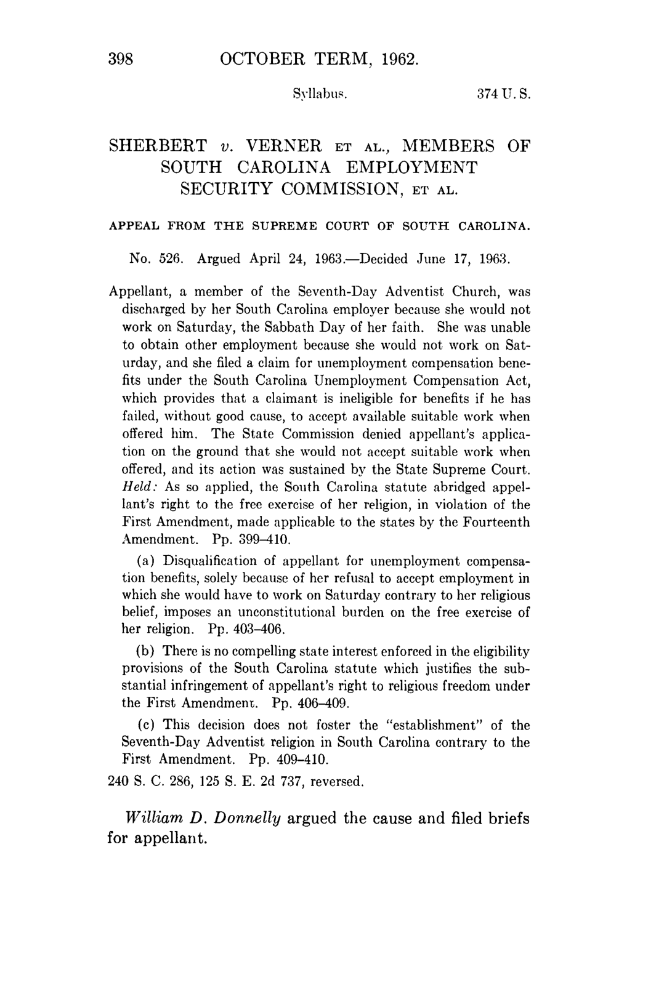

Optima Academy Online
An Education Experience Company
M/J CIVICS
Quarter / Module
Q2 · Module 4
Civil Liberties & Rights
Primary Source
Week 13 · Source 2
Author & Work
Sherbert v. Verner, 374 U.S. 398 (1963)
Pairs With
Lesson 13.2 · Primary Source Report 13 (Canvas)
Primary Source 2
Sherbert v. Verner, 374 U.S. 398 (1963)
Read this, then complete Primary Source Report 13 in Canvas.
📖 CONTEXT
Adell Sherbert, a Seventh-day Adventist, was fired for refusing to work on Saturdays and then denied unemployment benefits by South Carolina, which ruled she had turned down "suitable work" without good cause. Justice Brennan's opinion for the Court found that denial an unconstitutional burden on her free exercise of religion. Read it alongside Lesson 13.2's account of the compelling-interest standard this case established.

📜 THE TEXT
“Governmental imposition of such a choice puts the same kind of burden upon the free exercise of religion as would a fine imposed against appellant for her Saturday worship… Significantly South Carolina expressly saves the Sunday worshipper from having to make the kind of choice which we here hold infringes the Sabbatarian's religious liberty. Here not only is it apparent that appellant's declared ineligibility for benefits derives solely from the practice of her religion, but the pressure upon her to forego that practice is unmistakable… In these circumstances, the interests of the State must be paramount to override the free exercise claim. No such compelling state interest has been advanced by the State in this case to justify the substantial infringement of appellant's First Amendment right.”
(Opinion of the Court, Justice Brennan; condensed, public-domain text.)
💡 A NOTE ON THIS OPINION
Watch the detail about Sunday worshippers: South Carolina's rule already protected people whose Sabbath fell on Sunday, the day most businesses were already closed, from ever having to make Sherbert's choice. That built-in exception is part of why the Court could say the burden fell specifically on Sabbatarians like Sherbert, rather than on workers in general.
➡️ WHAT YOU'LL DO NEXT
1
Primary Source Report 13 (Canvas, Tier 3)
Reread this excerpt alongside Lemon v. Kurtzman before writing. Quote directly from both sources and include a Works Cited list.
Optima Academy Online · M/J CIVICS · Quarter 2 · Primary Source Page
Week 13 · Sherbert v. Verner, 374 U.S. 398 (1963)
© Optima Academy Online · An Education Experience Company